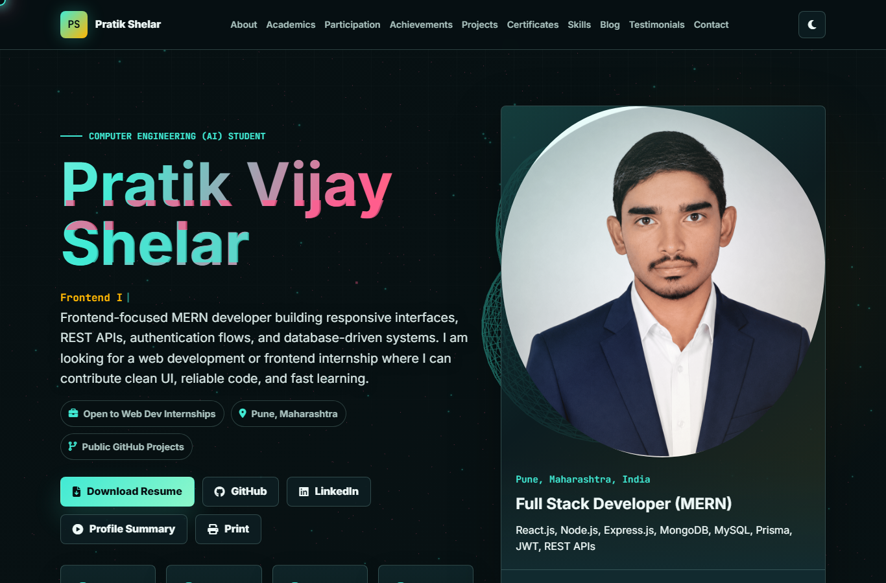
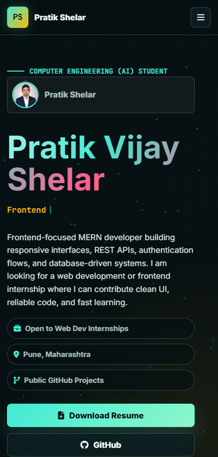
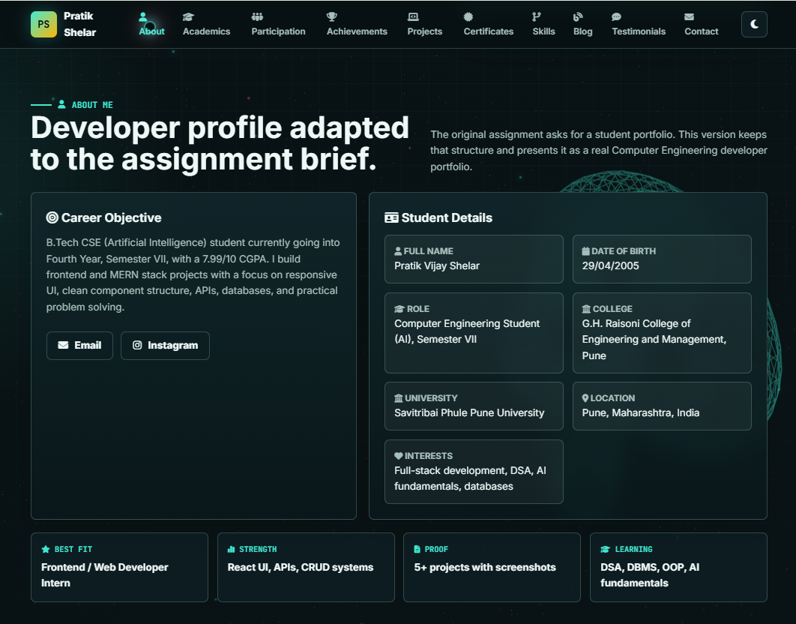
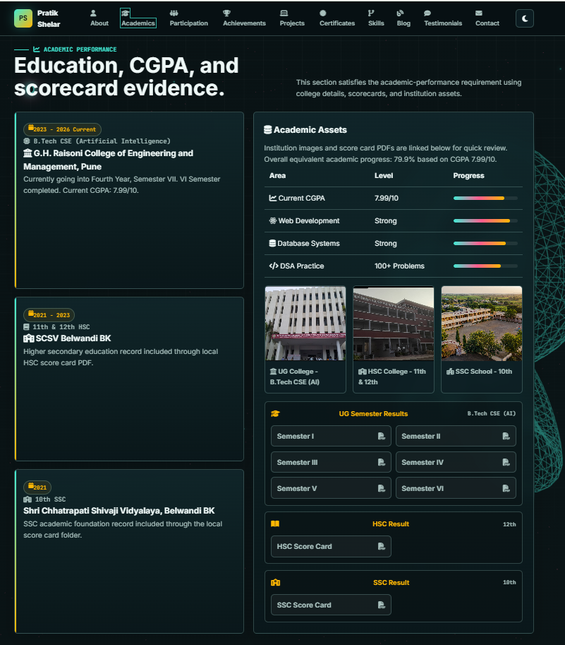
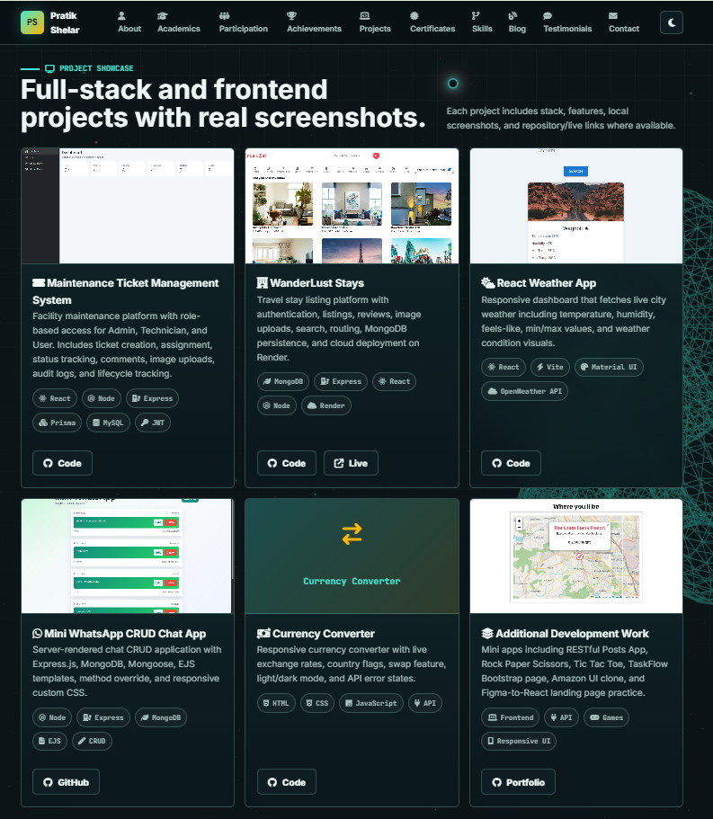
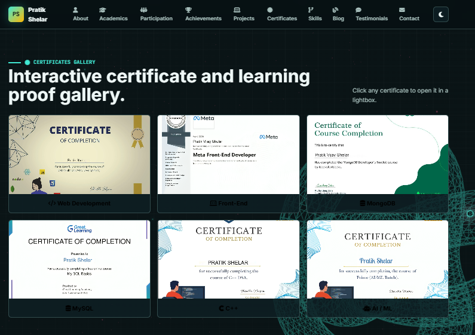
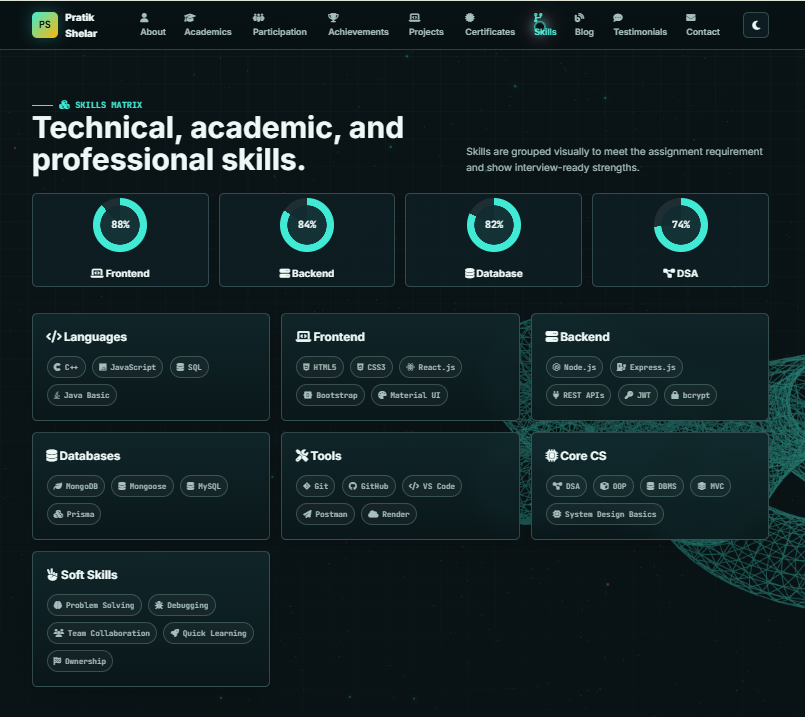
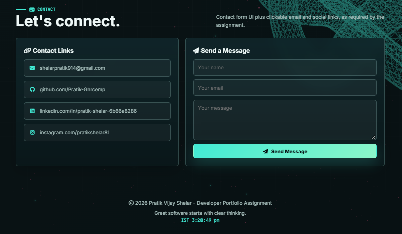

OriginEdge Technologies
Personal Portfolio Website
Project Documentation
A modern, responsive, and recruiter-ready personal portfolio website developed for Pratik Vijay Shelar.
B-607, Block B - Ratnaakar Nine Square
Opp. ITC Hotel, Vastrapur, Ahmedabad 380015
Website: www.originedgetech.com
Project Overview
The Personal Portfolio Website is a modern and responsive digital resume created to showcase Pratik Vijay Shelar's skills, projects, achievements, education, certifications, resume, and professional contact details. The website works as a personal branding platform where recruiters, mentors, and clients can quickly understand the developer's profile, technical strengths, academic background, and project experience.
The website is built as a static frontend project using HTML, CSS, and JavaScript. It includes interactive UI elements such as animated hero content, theme switching, responsive navigation, project cards, certificate previews, contact form validation, and resume download support.
The current architecture is JSON-driven. Portfolio content is stored in data/portfolio.json, while js/render-portfolio.js maps that structured data into reusable UI sections. The HTML acts as a lightweight single-page shell, and visible portfolio content, navigation labels, section copy, assets, contact form copy, footer text, icons, accessibility labels, and UI settings are controlled through the JSON payload. This makes the same design easier to reuse for automated student portfolio generation from future JSON payloads.
An additional Automation section has been added to demonstrate the GEMA-style use case: batch student records can be mapped from JSON fields such as student name, school name, grade and section, participation category, certificate type, issue date, verification documents, parent/contact details, statistical data, education, certificates, and experience. The same structure can be adapted later for WordPress custom fields, LearnPress progress data, Gamify achievements, and student certificate pages.
Learning Objectives
- Build responsive web interfaces for desktop, tablet, and mobile devices.
- Create a professional portfolio website with a strong personal brand.
- Apply modern UI/UX design principles in layout, spacing, typography, and interaction.
- Organize and manage the project using Git and GitHub.
- Render portfolio content dynamically from a structured JSON data source.
- Deploy a static website using Netlify.
- Improve frontend development skills through real project implementation.
Final Deliverables
| Deliverable | Status | Implementation Details |
|---|---|---|
| Responsive Personal Portfolio Website | Completed | Includes mobile-friendly layout, responsive sections, navigation, and project showcase. |
| GitHub Repository | Completed | Source code is available at the public GitHub repository. |
| Live Netlify Deployment | Completed | Portfolio is deployed and accessible through the Netlify live URL. |
| Resume Download Feature | Completed | Resume PDF is stored in the assets folder and linked from the hero section. |
| Contact Form | Completed | Contact form UI includes JavaScript-based email validation and user feedback. |
| JSON-Driven Rendering | Completed | Portfolio content, navigation, UI labels, icons, links, and section data are stored in data/portfolio.json and rendered dynamically by JavaScript. |
| GEMA Automation Demo | Completed | Added a live Automation section showing JSON field mapping, sample student records, reusable workflow, and WordPress LMS readiness. |
| Skills and Projects Showcase | Completed | Technical skills, tools, featured projects, screenshots, and project links are displayed. |
| Professional Documentation | Completed | This PDF document explains the project plan, implementation, deliverables, and deployment. |
Technology Stack
| Category | Technology | Purpose |
|---|---|---|
| Structure | HTML5 | Creates the semantic layout and website sections. |
| Styling | CSS3 | Handles responsive design, cards, animations, themes, and visual polish. |
| Interactivity | JavaScript | Controls navigation behavior, theme toggle, counters, form validation, and UI effects. |
| Visual Effects | Three.js and CSS Animations | Adds modern background visuals, reveal animations, and interactive experience. |
| Icons | Font Awesome | Provides clean icons for navigation, buttons, skills, and contact links. |
| Version Control | Git and GitHub | Manages source code, project history, and public repository sharing. |
| Deployment | Netlify | Hosts the static portfolio website online. |
Website Sections
- Navigation Bar: Responsive menu with links to major portfolio sections.
- Home / Hero Section: Introduction, profile image, role description, resume download, contact CTA, and project stats.
- About Me: Professional summary, academic background, interests, and internship focus.
- Academics: Education details with scorecard evidence for SSC, HSC, and B.Tech progress.
- Participation and Journey: Learning areas including frontend, backend, databases, DSA, and AI fundamentals.
- Achievements: DSA progress, GitHub achievements, full-stack project work, and documentation practice.
- Projects: Featured project cards with screenshots, technology tags, GitHub links, and live demo links where available.
- Certificates: Certificate gallery for Web Development, Frontend, MongoDB, MySQL, C++, and AI/ML.
- Skills: Technical, academic, tooling, and soft skills grouped in a clean skills matrix.
- Blog and Testimonials: Additional content that strengthens the personal brand and learning journey.
- Contact: Email, GitHub, LinkedIn, Instagram, and contact form UI.
- Footer: Closing message, live clock, quote line, and personal branding information.
Sample Screenshots
The following screenshots show the main pages and screens created for the portfolio website. These images are included in the project assets and demonstrate the desktop layout, mobile responsiveness, project showcase, academic proof, certificates, skills, blog, testimonials, and contact flow.

Desktop Home PageHero section with profile introduction, action buttons, quick stats, and profile panel.

Mobile Responsive ViewMobile optimized layout with compact navigation and responsive content stacking.

About SectionCareer objective, student details, internship focus, and personal profile information.

Academics SectionEducation details, CGPA, institution information, and scorecard evidence links.

Projects SectionFeatured project cards with screenshots, descriptions, technology tags, and links.

Certificates SectionCertificate gallery showing completed learning tracks and technical certifications.

Skills SectionGrouped skill cards for languages, frontend, backend, databases, tools, and soft skills.

Contact SectionContact form UI, email, GitHub, LinkedIn, Instagram, and connection links.
Day-Wise Development Plan
Day 1: Project Planning, Setup and Home Page Development
Objective: Set up the project structure and create the core layout of the portfolio website.
Tasks Completed:
- Created the project folder structure with separate folders for CSS, JavaScript, images, resume, and documents.
- Initialized the Git repository and connected the project with GitHub.
- Designed the website structure and page layout.
- Created a responsive navigation bar.
- Developed the Home / Hero section with profile introduction, CTA buttons, resume download, and profile image.
- Created the About Me section with profile summary and academic details.
- Implemented the initial responsive design.
Deliverables: Project structure, navigation bar, home section, about section, and initial responsive layout.
Skills Learned: HTML structure, CSS layout, responsive design basics, and GitHub repository management.
Day 2: Skills and Projects Showcase Development
Objective: Build sections that highlight technical expertise and completed projects.
Tasks Completed:
- Created the Skills section with grouped skill categories.
- Designed skill cards and tags for programming languages, frontend, backend, databases, tools, and soft skills.
- Created the Projects section with responsive project cards.
- Added project screenshots, descriptions, technology stacks, GitHub links, and live demo links.
- Implemented hover effects, reveal animations, and interactive card behavior.
Deliverables: Skills section, projects section, interactive cards, and responsive project showcase.
Skills Learned: CSS animations, Flexbox/Grid layouts, card-based UI design, and interface enhancement.
Day 3: Resume, Contact and Social Media Integration
Objective: Enable visitors to connect with the developer and access professional documents.
Tasks Completed:
- Added the downloadable resume feature using a local PDF file.
- Created certificate and achievement sections.
- Designed the contact form with name, email, and message fields.
- Added JavaScript email validation and form feedback message.
- Integrated social media and professional links including GitHub, LinkedIn, Instagram, and email.
- Added a footer section with live clock and quote display.
- Improved accessibility using semantic sections, labels, alt text, and ARIA attributes.
Deliverables: Resume section, contact form, social media links, certificate area, achievements, and footer.
Skills Learned: Form handling, JavaScript validation, external link integration, and user interaction design.
Day 4: Testing, Optimization and Netlify Deployment
Objective: Prepare the website for production and deploy it online.
Tasks Completed:
- Reviewed all website sections and fixed UI consistency issues.
- Tested responsiveness across desktop and mobile screen sizes.
- Checked browser compatibility for modern browsers.
- Optimized images and organized assets inside the project folders.
- Pushed the final source code to GitHub.
- Deployed the static website on Netlify.
- Generated the live portfolio URL.
- Created README and PDF project documentation.
Deliverables: Fully functional website, updated GitHub repository, Netlify deployment, live website link, and project documentation.
Skills Learned: Website optimization, deployment workflow, performance testing, and production-ready development.
Featured Projects Included
| Project | Description | Technologies |
|---|---|---|
| Maintenance Ticket Management System | Role-based ticket management application with ticket creation, assignment, status tracking, comments, uploads, authentication, and protected routes. | React, Node.js, Express.js, MySQL, Prisma, JWT |
| WanderLust Stays | Travel listing platform with authentication, property listings, owner actions, reviews, image upload flow, maps, and deployment. | MongoDB, Express.js, React, Node.js, Render |
| React Weather App | Weather dashboard with API-based search, dynamic visuals, temperature, humidity, loading states, and error handling. | React, Vite, Material UI, OpenWeather API |
| Mini WhatsApp CRUD Chat App | Server-rendered CRUD chat application with routes, MongoDB persistence, EJS views, and timestamps. | Node.js, Express.js, MongoDB, EJS |
| Currency Converter | API-based currency converter with exchange rates, country flags, swap logic, dark mode, and error states. | HTML5, CSS3, JavaScript, API |
Repository Structure
| Path | Purpose |
|---|---|
| index.html | Main portfolio webpage containing all content sections. |
| css/style.css | Main stylesheet for layout, responsive design, themes, and animations. |
| js/main.js | Core JavaScript for navigation, theme toggle, form validation, counters, clock, and print action. |
| js/animations.js | Animation and visual interaction logic. |
| js/components.js | Reusable component-level JavaScript behavior. |
| assets/images | Profile image, project screenshots, certificate images, institution images, and README previews. |
| assets/docs | Resume PDF and academic scorecard PDFs. |
| README.md | GitHub documentation for project overview, setup, features, and links. |
Testing and Quality Checks
- Checked navigation links and smooth scrolling behavior.
- Verified resume download from the hero section.
- Tested contact form validation with valid and invalid email formats.
- Reviewed responsive layout across mobile, tablet, and desktop screen sizes.
- Confirmed project screenshots, certificates, and profile image paths.
- Checked external links for GitHub, LinkedIn, Instagram, email, live project, and live portfolio.
- Reviewed visual consistency, spacing, readable typography, and section hierarchy.
Submission Link Verification
| Link | Verification Result | Checked On |
|---|---|---|
| https://lively-starlight-dffa3f.netlify.app/ | Working, HTTP 200, portfolio title loaded successfully. | 10 June 2026 |
| https://github.com/Pratik-Ghrcemp/pratik-shelar-portfolio | Working, HTTP 200, public GitHub repository page loaded successfully. | 10 June 2026 |
Deployment Details
The portfolio is a static frontend website, so no build command is required. The project root is used as the publish directory, and index.html acts as the entry file. The final website was deployed on Netlify and connected with the public GitHub repository.
| Platform | Netlify |
|---|---|
| Build Command | Not required |
| Publish Directory | Project root |
| Entry File | index.html |
| Live Portfolio | https://lively-starlight-dffa3f.netlify.app/ |
Conclusion
The Personal Portfolio Website successfully meets the project requirements by presenting a responsive, professional, and interactive web presence for Pratik Vijay Shelar. It includes all core deliverables such as home, about, skills, projects, resume download, certifications, achievements, contact form, social links, GitHub repository, and Netlify deployment.
This project demonstrates practical frontend development skills, project organization, UI/UX design understanding, GitHub workflow, and deployment knowledge. It can be used as a digital resume and personal branding platform for future internships, job applications, client work, and academic presentation.
Project: Personal Portfolio Website
Live Portfolio: https://lively-starlight-dffa3f.netlify.app/
GitHub Repo: https://github.com/Pratik-Ghrcemp/pratik-shelar-portfolio